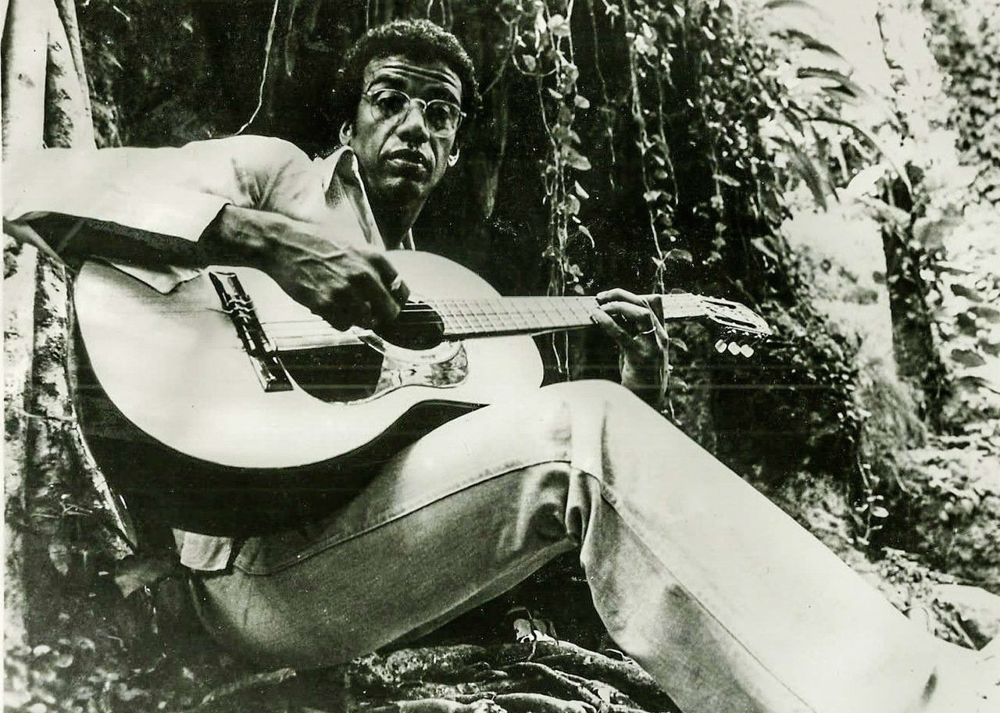

A Tábua de Esmeralda
Jorge Ben (aka Jorge Ben Jor)
"It's the truth, without lie, correct very truthful"
Thank you to Sylvan for the opening context!
Jorge Ben Jor (then only Jorge Ben—he changed his name because George Benson kept getting mailed his paychecks) created an infectious blend of samba rhythms with rock, funk, and soul, to form something of a high-energy, fat-bottomed cousin to bossa nova, which became hugely influential on the development of Brazilian Popular Music (MPB.)
During a trip to Paris, Ben dragged out fellow iconic Brazilian musician Gilberto Gil to pay a visit to a run-down old house once owned by legendary alchemist Nicolas Flamel. There, the two musicians saw a vision: a group of alchemists in 15th century clothes—and among them was Flamel himself! Six months after this incident, “A Tábua de Esmeralda” was released.
Several songs on this 1974 album explore Ben’s fascination with Hermeticism, a spiritual-philosophical movement dating back to early Christian times that asserts all religions to reflect the same underlying divine truth, with many citing or referencing hermeticist philosophers such as Hermes Trimegistus, writer of the titular Emerald Tablet, Paracelsus, and the aforementioned Nicolas Flamel, whose drawings are featured on the cover art.
T/L Note: English translations are based on the great work by the Brazil 70 Translation Project!
00:00
— Greetings
— Salve
00:02
— No, no, sit down! Sit down! No, no, sit down
— Não, não, senta! Senta! Não, não, senta
00:09
— If you're dancing, then you have to dance like you mean it
— Se for dançar, tem que dançar dançando
00:36
The alchemists are coming
Estão chegando os alquimistas
00:41
They are coming, the alchemists
Os alquimistas estão chegando
00:45
The alchemists are coming
Estão chegando os alquimistas
00:50
They are coming, the alchemists
Os alquimistas estão chegando
01:10
They are discreet and silent
Eles são discretos e silenciosos
01:14
They live far away from men
Moram bem longe dos homens
01:19
They carefully choose the time and place
Escolhem com carinho a hora e o tempo
01:21
For their precious work
Do seu precioso trabalho
01:23
They are patient, assiduous and persevering
São pacientes, assíduos e perseverantes
01:28
They execute, according to the hermetic rules
Executam segundo as regras herméticas
01:32
From grinding to fixation
Desde a trituração, a fixação
01:38
Distillation and coagulation
A destilação e a coagulação
01:43
They bring crucibles with them
Trazem consigo cadinhos
01:47
Glass vases, pottery jars
Vasos de vidro, potes de louça
01:52
All very well illuminated
Todos bem e iluminados
01:57
They avoid any contact with people
Evitam qualquer relação com pessoas
02:01
Of sordid temper
De temperamento sórdido
02:03
Of sordid temper
De temperamento sórdido
02:17
The alchemists are coming
Estão chegando os alquimistas
02:22
They are coming, the alchemists
Os alquimistas estão chegando
02:26
The alchemists are coming
Estão chegando os alquimistas
02:30
They are coming, the alchemists
Os alquimistas estão chegando
02:53
The alchemists are coming
Estão chegando os alquimistas
02:58
They are coming, the alchemists
Os alquimistas estão chegando
03:02
The alchemists are coming
Estão chegando os alquimistas
03:07
They are coming, the alchemists
Os alquimistas estão chegando
Although it’s not as clear as in the last song, this piece is also an ode to Hermeticism, being a reference to Swiss botanist and alchemist Paracelsus
00:08
Here comes the man
Lá vem o homem
00:14
With the floral tie
Da gravata florida
00:17
Oh my God
Meu Deus do céu
00:21
What a beautiful tie
Que gravata mais linda
00:27
What a sensational tie
Que gravata sensacional
00:29
Look at the details on that tie
Olha os detalhes da gravata
00:35
What a color combination
Que combinação de cores
00:36
What tropical perfection
Que perfeição tropical
00:44
Look, what a beautiful pink
Olhe que rosa lindo
00:45
This turquoise blue leaving its leaves
Azul turquesa se desfolhando
00:47
Under the simple cloves
Sob os singelos cravos
00:52
And the daisies, daisies
E as margaridas, margaridas
00:55
In love with the jasmine
De amores com jasmim
01:01
This is not just a tie
Isso não é só uma gravata
01:05
This tie is a report on the harmony of beautiful things
Essa gravata é o relatório de harmonia de coisas belas
01:09
It’s a hanging garden suspended on the neck
É um jardim suspenso dependurado no pescoço
01:13
Of a friendly and happy man
De um homem simpático e feliz
01:19
Happy, happy because
Feliz, feliz porque
01:27
With that tie any ugly man
Com aquela gravata, qualquer homem feio
01:29
Any ugly man becomes a prince
Qualquer homem feio vira príncipe
01:35
Friendly, friendly, friendly because
Simpático, simpático, simpático porque
01:43
With that tie he is expected
Com aquela gravata ele é esperado
01:46
He is welcome, he is adored anywhere
É bem chegado, é adorado em qualquer lugar
00:51
Wherever he passes by, flowers and love bloom
Por onde ele passa nascem flores e amores
02:01
With a simple floral tie like that
Com uma gravata florida singela como essa
02:04
So beautiful
Linda de viver
02:09
Even me, even me, even me, even me
Até eu, até eu, até eu, até eu
02:34
There goes the man with the floral tie
Lá vai o homem com a gravata florida
02:50
There goes the man with the floral tie
Lá vai o homem com a gravata florida
02:59
Even me
Até eu
00:00
— Errare humanum est
— Errare humanum est
00:25
There are days
Tem uns dias
00:30
That I wake up
Que eu acordo
00:33
Thinking and wondering
Pensando e querendo saber
00:44
Where does it come from?
De onde vem
00:48
Our impulse
O nosso impulso
00:52
To probe outer space
De sondar o espaço
01:03
Starting with the shadows over the stars
A começar pelas sombras sobre as estrelas
01:12
And to think that the gods were astronauts
E de pensar que eram os deuses astronautas
01:20
And that you can fly by yourself to the stars
E que se pode voar sozinho até as estrelas
01:30
Or to before known times
Ou antes dos tempos conhecidos, conhecidos
01:40
Did the gods come from other galaxies
Vieram os deuses de outras galáxias
01:48
Or from a planet of impossible possibilities?
Ou de um planeta de possibilidades impossíveis?
01:57
And to think that we are not the first terrestrial beings
E de pensar que não somos os primeiros seres terrestres
02:05
For we are heirs to a cosmic heritage
Pois nós herdamos uma herança cósmica
02:15
Errare
Errare
02:20
Errare humanum est
Errare humanum est
02:34
Errare
Errare
02:38
Errare humanum est
Errare humanum est
02:54
Neither gods nor astronauts
Nem deuses, nem astronautas
02:56
Whoa, whoa, whoa
Ô ô ô
03:02
Were the gods astronauts?
Eram os deuses astronautas
03:05
Neither gods neither gods neither gods
Nem deuses, nem deuses, nem deuses
03:12
Neither gods nor astronauts
Nem deuses, nem astronautas
00:15
Whoa, whoa, whoa
Ô ô ô
03:21
Were the gods astronauts?
Eram os deuses astronautas
03:48
Neither gods nor astronauts
Nem deuses, nem astronautas
03:58
Were the gods astronauts?
Eram os deuses astronautas
04:14
Ten (na-na-na na-na-na-na)
Dez (na-na-na na-na-na-na)
04:17
Nine (na-na-na na-na-na-na)
Nove (na-na-na na-na-na-na)
04:19
Eight (na-na-na na-na-na-na)
Oito (na-na-na na-na-na-na)
04:21
Seven (na-na-na na-na-na-na)
Sete (na-na-na na-na-na-na)
04:23
Six (na-na-na na-na-na-na)
Seis (na-na-na na-na-na-na)
04:25
Five (na-na-na na-na-na-na)
Cinco (na-na-na na-na-na-na)
04:28
Four (na-na-na na-na-na-na)
Quatro (na-na-na na-na-na-na)
04:30
Three (na-na-na na-na-na-na)
Três (na-na-na na-na-na-na)
04:33
Two (na-na-na na-na-na-na)
Dois (na-na-na na-na-na-na)
04:34
One (na-na-na na-na-na-na)
Um (na-na-na na-na-na-na)
04:36
Zero (na-na-na na-na-na-na)
Zero (na-na-na na-na-na-na)
T/L Note: "Woman Girl" may sound a bit strange, but it sounds strange in Portuguese too. I imagine Jorge Ben just liked the alliteration on the "M"s
00:00
— Pedrinho is going to be a daddy!
— Pedrinho vai ser papai!
00:05
— Who's going to be a daddy?
— Quem vai ser papai?
00:07
— Black-skinned woman girl
— Menina mulher da pele preta
00:08
— Black-skinned woman girl? Haha
— Menina mulher da pele preta? Haha
00:22
This black-skinned woman girl
Essa menina mulher da pele preta
00:30
With blue eyes and white smile
Dos olhos azuis, do sorriso branco
00:36
She's not letting me sleep peacefully
Não está me deixando dormir sossegado
00:43
Doesn't she know that I stay awake
Será que ela não sabe que eu fico acordado
00:50
Thinking about her every day, every hour?
Pensando nela todo dia, toda hora?
00:57
Passing by my window every day, every hour
Passando pela minha janela todo dia, toda hora
01:02
Knowing that I keep looking (with malice)
Sabendo que eu fico a olhar (com malícia)
01:10
Her black skin (with malice)
A sua pele preta (com malícia)
01:17
Her blue eyes (with malice)
Seus olhos azuis (com malícia)
01:24
Her white smile (with malice)
Seu sorriso branco (com malícia)
01:31
Her whole body (with malice)
Seu corpo todo, enfim (com malícia)
01:39
With malice
Com malícia
01:43
I wonder if when I'm awake
Será que quando eu fico acordado
01:51
Thinking about her
Pensando nela
01:57
She thinks a little about me?
Ela pensa um pouco em mim?
02:04
A little about me (with malice)
Um pouco em mim (com malícia)
02:11
A little about me (with malice)
Um pouco em mim (com malícia)
02:18
This black-skinned woman girl
Essa menina mulher da pele preta
02:21
She’s not letting me sleep peacefully (with malice)
Não está me deixando dormir sossegado (com malícia)
02:25
Does she not, no, no
Será que ela não, não, não
02:27
Think a little about me?
Pensa um pouco em mim
02:28
Think, wow (with malice)
Pensa, uou (com malícia)
02:30
With malice, with malice
Com malícia, com malícia
02:34
A little about me, a little about me, a little about me, a little about me
Um pouco em mim, um pouco em mim, um pouco em mim, um pouco em mim
02:35
With malice, with malice (with malice)
Com malícia, com malícia (com malícia)
02:38
A little about me, a little about me
Um pouco em mim, um pouco em mim
02:41
With malice, with malice
Com malícia, com malícia
02:43
Of this woman girl (with malice)
Dessa menina mulher (com malícia)
02:45
Her black skin, her black skin, her white smile, her blue eyes
Da pele preta, da pele preta, do sorriso branco, dos olhos azuis
02:49
She’s not letting me sleep peacefully, doesn't she know...
Não está me deixando nem dormir sossegado, será que ela não sabe...
00:06
I will root for peace
Eu vou torcer pela paz
00:10
For joy, for love
Pela alegria, pelo amor
00:16
For beautiful ladies
Pelas moças bonitas
00:19
I will root, I will
Eu vou torcer, eu vou
00:23
For beautiful ladies
Pelas moças bonitas
00:26
I will root, I will
Eu vou torcer, eu vou
00:29
For winter, for smiles
Pela paz, pelo sorriso
00:34
For spring, for girlfriends
Pela primavera, pela namorada
00:40
For summer, for the blue skies
Pelo verão, pelo céu azul
00:45
For autumn, for dignity
Pelo outono, pela dignidade
00:51
For the beautiful green of this sea
Pelo verde lindo desse mar
00:58
For beautiful ladies
Pelas moças bonitas
01:00
I will root, I will
Eu vou torcer, eu vou
01:05
For beautiful ladies
Pelas moças bonitas
01:07
I will root, I will
Eu vou torcer, eu vou
01:12
I will root for peace
Eu vou torcer pela paz
01:17
For joy, for love
Pela alegria, pelo amor
00:22
For beautiful ladies
Pelas moças bonitas
00:27
I will root, I will
Eu vou torcer, eu vou
00:30
For beautiful ladies
Pelas moças bonitas
00:33
I will root, I will
Eu vou torcer, eu vou
01:37
For the useful things you can buy
Pelas coisas úteis que se pode comprar
01:39
With ten cruzeiros
Com dez cruzeiros
01:41
For good living, for understanding
Pelo bem estar, pela compreensão
01:46
For celestial agriculture, for the heart
Pela agricultura celeste, pelo coração
01:53
For the urban garden, for suggestions
Pelo jardim da cidade, pela sugestão
01:59
For Saint Thomas Aquinas
Pelo Santo Tomás de Aquino
02:02
For my brother
Pelo meu irmão
02:05
For Gato Barbieri
Pelo Gato Barbieri
02:08
For Flamengo
Pelo mengão
02:11
For my friend who is faint of heart
Pelo meu amigo que sofre do coração
02:19
For beautiful ladies
Pelas moças bonitas
02:22
I will root, I will
Eu vou torcer, eu vou
02:25
For beautiful ladies
Pelas moças bonitas
02:27
I will root, I will
Eu vou torcer, eu vou
00:31
I will root for peace
Eu vou torcer pela paz
00:38
For joy, for love
Pela alegria, pelo amor
00:44
For beautiful ladies
Pelas moças bonitas
00:46
I will root, I will
Eu vou torcer, eu vou
00:50
For beautiful ladies
Pelas moças bonitas
00:52
I will root, I will
Eu vou torcer, eu vou
00:00
— Magnolia
— Magnólia
00:13
What more could I want?
O que eu quero mais?
00:18
If I know that life is pretty and beautiful
Se eu sei que a vida é bela e linda
00:21
What more could I want?
O que eu quero mais?
00:25
If I know that I’m fine with life
Se eu sei que eu estou de bem com vida
00:29
All in white
Todinho de branco
00:30
Beautiful
Lindo
00:31
Waiting for her to arrive
Esperando ela chegar
00:37
For her to arrive
Ela chegar
00:42
Mag...
Mag...
00:45
Mag, Mag...
Mag, Mag...
00:49
Magnolia
Magnólia
00:50
I said Magnolia
Eu disse Magnólia
00:52
I said Magnolia
Eu disse Magnólia
00:53
Mag...
Mag...
00:57
Mag, Mag...
Mag, mag...
01:01
Magnolia
Magnólia
01:02
I said Magnolia
Eu disse Magnólia
01:03
I said Magnolia
Eu disse Magnólia
01:05
Mag...
Mag...
01:09
Mag, Mag...
Mag, mag...
01:13
Magnolia
Magnólia
01:19
I've already consulted the stars
Já consultei os astros
01:27
She arrives in spring
Ela chega na primavera
01:35
She’s already on her way
Ela já se encontra a caminho
01:43
Flying in a golden mothership
Voando numa nave maternal doirada
01:50
Very fast, made out of a miraculous metal
Muito veloz, feita de um metal miraculoso
01:57
With crystal windows
Com janelas de cristal
02:01
And pink velvet lining
E forro de veludo rosa
02:05
And pink velvet lining, pink
E forro de veludo rosa, rosa
02:10
Mag...
Mag...
02:13
Mag, Mag...
Mag, Mag...
02:17
Magnolia
Magnólia
02:19
I said Magnolia
Eu disse Magnólia
02:21
I said Mag, Mag
Eu disse Mag, Mag
02:22
Mag...
Mag...
02:25
Mag, Mag...
Mag, mag...
02:29
Magnolia
Magnólia
02:31
I said Magnolia
Eu disse Magnólia
02:33
I said Magnolia
Eu disse Magnólia
02:34
I said Mag, Mag, Mag...
Eu disse Mag, Mag, Mag...
00:21
My stubbornness is a way to win you over
A minha teimosia é uma arma pra te conquistar
00:27
I will wear you down
Eu vou vencer pelo cansaço
00:29
Until you like me, woman (woman)
Até você gostar de mim, mulher (mulher)
00:38
Graceful woman, you've achieved the honor
Mulher graciosa, alcança a honra
00:43
You achieved it, woman
Você alcançou, mulher
00:50
My beloved, my darling, my beautiful one
Minha amada, minha querida, minha formosa
00:57
Come and tell me that I’m your lily
Vem e me fala que eu sou o seu lírio
01:00
And that you are my rose
E você é minha rosa
01:06
Show me your face (show me your face)
Mostra-me teu rosto (Mostra-me teu rosto)
01:12
Make me hear your voice
Fazei-me ouvir a tua voz
01:17
Put stars in my eyes
Põe estrelas em meus olhos
01:21
Music in my ears
Música em meus ouvidos
01:24
Put joy in my body
Põe alegria em meu corpo
01:27
Along with your love
Junto com amor de você
01:31
Woman (woman)
Mulher (mulher)
01:49
Woman
Mulher
01:51
My stubbornness is a way to win you over
A minha teimosia é uma arma pra te conquistar
01:57
If it’s what God wants
Seja o que Deus quiser
02:00
I’ll win you over
Eu vou conquistar você
02:03
You will see how it works out
Você vai ver
02:05
Because my stubbornness is a way to win you over
Pois a minha teimosia é uma arma pra te conquistar
02:10
Woman, woman...
Mulher, mulher...
"Zumbi" (Zumbi dos Palmares) was an ex-slave who led the largest "quilombo" in Brazil—quilombos being essentially small communities/kingdoms formed by escaped slaves. He led many charges against plantations and defended his quilombo from attacks by Portuguese colonizers, thus becoming a huge symbol against slavery and racism in general. He was unfortunately killed after being betrayed in 1695. The date of his death, 20th of November, became a national holiday in Brazil: “Black Awareness Day"
00:05
Angola, Congo, Benguela
Angola, Congo, Benguela
00:09
Monjolo, Cabinda, Mina
Monjolo, Cabinda, Mina
00:11
Quiloa, Rebolo
Quiloa, Rebolo
00:15
Here where the men stand
Aqui onde estão os homens
00:22
There’s a big auction
Há um grande leilão
00:27
They say that there is a princess for sale
Dizem que nele há uma princesa à venda
00:32
Brought here with her subjects
Que veio junto com seus súditos
00:37
Chained to ox-carts
Acorrentados em carros de boi
00:42
I want to see
Eu quero ver
00:44
I want to see
Eu quero ver
00:47
I want to see
Eu quero ver
00:50
I want to see
Eu quero ver
00:55
Angola, Congo, Benguela
Angola, Congo, Benguela
00:59
Monjolo, Cabinda, Mina
Monjolo, Cabinda, Mina
01:01
Quiloa, Rebolo
Quiloa, Rebolo
01:06
Here where the men stand
Aqui onde estão os homens
01:11
On one side there’s a sugar plantation
Dum lado cana de açúcar
01:16
On the other there’s coffee
Do outro lado o cafezal
01:21
In the middle the slavemasters sit
Ao centro senhores sentados
01:26
Watching the white cotton
Vendo a colheita do algodão branco
01:32
Being picked by black hands
Sendo colhidos por mãos negras
01:36
I want to see
Eu quero ver
01:39
I want to see
Eu quero ver
01:42
I want to see
Eu quero ver
01:44
I want to see
Eu quero ver
01:48
When Zumbi comes
Quando Zumbi chegar
01:53
What will happen then
O que vai acontecer
01:56
Zumbi is a lord of war
Zumbi é senhor das guerras
01:58
A lord of demands
É senhor das demandas
02:02
When Zumbi arrives
Quando Zumbi chega
02:04
Zumbi will take charge
É Zumbi é quem manda
02:06
Zumbi is a lord of war
Zumbi é senhor das guerras
02:09
A lord of demands
É senhor das demandas
02:12
When Zumbi arrives
Quando Zumbi chega
02:14
Zumbi will take charge
É Zumbi é quem manda
02:21
I want to see
Eu quero ver
02:23
I want to see
Eu quero ver
02:26
I want to see
Eu quero ver
02:29
I want to see
Eu quero ver
02:51
Angola, Congo, Benguela
Angola, Congo, Benguela
02:59
Monjolo, Cabinda, Mina
Monjolo, Cabinda, Mina
03:07
Quiloa, Rebolo
Quiloa, Rebolo
00:06
Brother (brother)
Irmão (irmão)
00:08
Brother (brother)
Irmão (irmão)
00:10
Prepare one more happy way for my Lord
Prepare mais um caminho alegre pro meu Senhor
00:16
With many love and flowers, and music, and music
Com muitos amores e flores, e música, e música
00:22
Brother (brother)
Irmão (irmão)
00:23
Brother (brother)
Irmão (irmão)
00:25
Prepare one more happy way for my Lord
Prepare mais um caminho alegre pro meu Senhor
00:30
With many love and flowers, and music, and music
Com muitos amores e flores, e música, e música
00:35
Jesus Christ is my Lord, Jesus Christ is my friend
Jesus Cristo é o meu Senhor, Jesus Cristo é o meu amigo
00:42
Jesus Christ is my Lord, Jesus Christ is my friend
Jesus Cristo é o meu Senhor, Jesus Cristo é o meu amigo
00:50
Brother (brother)
Irmão (irmão)
00:51
Brother (brother)
Irmão (irmão)
00:52
Prepare one more happy way for my Lord
Prepare mais um caminho alegre pro meu Senhor
00:58
With many love and flowers, and music, and music
Com muitos amores e flores, e música, e música
01:05
Brother (brother)
Irmão (irmão)
01:05
Brother (brother)
Irmão (irmão)
01:07
Prepare one more happy way for my Lord
Prepare mais um caminho alegre pro meu Senhor
01:13
With many love and flowers, and music, and music
Com muitos amores e flores, e música, e música
01:19
Jesus Christ is my Lord, Jesus Christ is my friend
Jesus Cristo é o meu Senhor, Jesus Cristo é o meu amigo
01:26
Jesus Christ is my Lord, Jesus Christ is my friend
Jesus Cristo é o meu Senhor, Jesus Cristo é o meu amigo
01:33
Brother (brother)
Irmão (irmão)
01:34
Brother (brother)
Irmão (irmão)
01:36
Prepare one more happy way for my Lord
Prepare mais um caminho alegre pro meu Senhor
01:42
With many love and flowers, and music, and music
Com muitos amores e flores, e música, e música
(instrumental)
02:02
Brother, prepare one more happy way for my Lord
Irmão, prepare mais um caminho alegre pro meu Senhor
02:07
Sweet Jesus!
Amado Jesus!
02:10
Brother, prepare one more happy way for my Lord
Irmão, prepare mais um caminho alegre pro meu Senhor
02:15
Sweet Jesus!
Amado Jesus!
02:17
Brother, prepare one more happy way for my Lord
Irmão, prepare mais um caminho alegre pro meu Senhor
02:24
Jesus Christ is my Lord, Jesus Christ is my friend
Jesus Cristo é o meu Senhor, Jesus Cristo é o meu amigo
02:30
Is my friend, savior Jesus!
É meu amigo, Jesus salvador!
02:32
Jesus Christ is my Lord, Jesus Christ is my friend
Jesus Cristo é o meu Senhor, Jesus Cristo é o meu amigo
02:38
Everybody, brother!
Todo mundo, irmão!
02:40
Jesus Christ is my Lord, Jesus Christ is my friend
Jesus Cristo é o meu Senhor, Jesus Cristo é o meu amigo
02:46
Jesus Christ is my Lord, Jesus Christ is my friend
Jesus Cristo é o meu Senhor, Jesus Cristo é o meu amigo
Alchemist Nicolas Flamel was married to a woman named Perenelle, who was twice-widowed. Hence "the widow's lover."
00:02
The widow's lover
Namo-mo-ra-rado da viúva
00:05
The widow's lover
Namo-mo-ra-rado da viúva
00:08
The widow's lover
Namo-mo-ra-rado da viúva
00:11
The widow's lover passed by
O namorado da viúva passou por aqui
00:17
The widow's lover passed by
O namorado da viúva passou por aqui
00:21
In a hurry, pensive, suspicious
Apressado, pensativo, desconfiado
00:28
Looking both ways
Olhando pra todos os lados
00:32
Because he knew that in the city
Pois ele soube que na cidade
00:37
They bet that he
As apostas subiram dizendo que ele
00:42
Wouldn't be up to the challenge
Não vai dar conta do recado
00:45
Because he knew that in the city
Pois ele soube que na cidade
00:51
They bet that he
As apostas subiram dizendo que ele
00:55
Wouldn't be up to the challenge
Não vai dar conta do recado
01:00
Who’s that widow?
Que viúva é essa?
01:05
That everybody wants but is afraid
Que todos querem mas têm medo
01:06
Scared to have her?
Têm receio de ser dono dela
01:10
They say she has enviable
Dizem que ela tem um dote
01:12
Physical and financial endowments (I want to see!)
Físico e financeiro invejável (eu quero ver!)
01:16
Who’s that widow?
Que viúva é essa?
01:21
That everybody wants but is afraid
Que todos querem mas têm medo
01:23
Scared to have her?
Têm receio de ser dono dela
01:27
They say she has enviable
Dizem que ela tem um dote
01:29
Physical and financial endowments (I want to see!)
Físico e financeiro invejável (eu quero ver!)
01:33
The widow’s lover passed by
O namorado da viúva passou por aqui
00:41
The widow’s lover
Namo-mo-ra-rado da viúva
00:43
The widow’s lover
Namo-mo-ra-rado da viúva
00:46
The widow’s lover...
Namo-mo-ra-rado da viúva...
T/L Note: For this song, Jorge Ben recites many passages in Hermes Trismegistus’ Emerald Tablet, adding some of his own words here and there. As such, this translation is mostly based on English translations of the Emerald Tablet itself
00:00
Hermes Trismegistus and his celestial Emerald Tablet...
Hermes Trismegisto e sua celeste tábua de esmeralda...
00:15
Hermes Trismegistus wrote
Hermes Trismegisto escreveu
00:21
With a diamond tip
Com uma ponta de diamante
00:25
On an emerald tablet
Em uma lâmina de esmeralda
00:29
What is below
O que está embaixo
00:31
Is like that which is above
É como o que está no alto
00:36
What is above
O que está no alto
00:38
Is like that which is below
É como o que está embaixo
00:43
And through these things miracles are made of one thing
E por essas coisas fazem-se os milagres de uma coisa só
00:50
And as all things were by contemplation of one
E como todas essas coisas são e provêm de um
00:58
By mediation of one
Pela mediação do um
01:02
So all things have their birth from this one thing
Assim todas essas coisas são nascidas desta única coisa
01:06
By adaptation
Por adaptação
01:08
By adaptation
Por adaptação
01:13
The Sun is its father
O sol é seu pai
01:16
The Moon is its mother
A lua é sua mãe
01:20
The wind carried it in its womb
O vento o trouxe em seu ventre
01:23
The Earth is its nurse and receptacle
A terra é seu nutriz e receptáculo
01:30
The Father of all
O pai de tudo
01:31
The thelema of the universal world is here
O Thelemeu do mundo universal está aqui
01:37
The Father of all
O pai de tudo
01:38
The thelema of the universal world is here
O Thelemeu do mundo universal está aqui
01:52
Its force or power is entire
Sua força ou potência está inteira
01:59
If it is, is, is converted into earth
Se ela é, é, é convertida em terra
02:07
Thou shalt separate the earth from the fire
Tu separarás a terra do fogo
02:09
And the subtle from the gross
E o sutil do espesso
02:13
Sweetly, with great industry
Docemente, com grande desvelo
02:18
For it ascends from the earth
Pois ele ascende da terra
02:21
And descends from heaven
E descende do céu
02:25
And receives strength from things superior
E recebe a força das coisas superiores
02:32
And things inferior
E das coisas inferiores
02:39
By this mean thou shalt have the glory of the whole world
Tu terás por esse meio a glória do mundo, do mundo
02:47
And all obscurity shall flee from you
E toda obscuridade fugirá de ti
02:54
And all obscurity will flee from you
E toda obscuridade fugirá de ti
03:01
It’s the force above all force
É a força de toda força
03:08
For it will vanquish every subtle thing
Pois ela vencerá qualquer coisa sutil
03:12
And it will penetrate every solid thing
E penetrará qualquer coisa sólida
03:16
So was the world created
Assim o mundo foi criado
03:20
From this will come admirable adaptations
Disso sairão admiráveis adaptações
03:26
Of which the manner is here in this
Das quais aqui o meio é dado
03:34
Hence I am called
Por isso fui chamado
03:38
Hermes Trismegistus
Hermes Trismegisto
03:41
Hence I am called
Por isso fui chamado
03:45
Hermes Trismegistus
Hermes Trismegisto
03:49
Having the three parts of the universal philosophy
Tendo as três partes da filosofia universal
03:56
Having the three parts of the universal philosophy
Tendo as três partes da filosofia universal
04:03
That which I have said of the operation of the Sun is completed
O que disse da obra solar está completo
04:10
That which I have said of the operation of the Sun is completed
O que disse da obra solar está completo
04:18
Hermes Trismegistus wrote
Hermes Trismegisto escreveu
04:25
With a diamond tip
Com uma ponta de diamante
04:28
On an emerald tablet
Em uma lâmina de esmeralda
04:32
Hermes Trismegistus wrote
Hermes Trismegisto escreveu
04:39
With a diamond tip
Com uma ponta de diamante
04:43
On an emerald tablet
Em uma lâmina de esmeralda
05:02
Hermes Trismegistus wrote
Hermes Trismegisto escreveu
05:09
With a diamond tip
Com uma ponta de diamante
05:12
On an emerald tablet
Em uma lâmina de esmeralda
05:16
Hermes Trismegistus and his celestial Emerald Tablet...
Hermes Trismegisto e sua celeste tábua de esmeralda...
00:33
I asked you to wait five minutes, just that
Pedi você pra esperar cinco minutos só
00:37
You went away without answering me
Você foi embora sem me atender
00:42
You don’t know just what you lost
Não sabe o que perdeu
00:47
'Cause you didn't see, you didn't see
Pois você não viu, você não viu
00:49
What I've become
Como eu fiquei
00:54
I asked you to wait five minutes, just that
Pedi você pra esperar cinco minutos só
00:59
You went away, away, away
Você foi embora, embora, embora
01:03
Without answering me
Sem me atender
01:07
Because you didn't see
Pois você não viu
01:09
You don’t know just what you lost
Não sabe o que perdeu
01:11
'Cause you didn't see, you didn't see, you didn't see
Pois você não viu, não viu, não viu
01:13
What I've become
Como eu fiquei
01:18
They say that you went away crying, smiling, singing
Dizem que foi chorando, sorrindo, cantando
01:29
My friends, my friends, they even said
Os meus amigos, meus amigos, até disseram
01:34
That you went away loving, loving
Que foi amando, amando
01:40
'Cause you don’t know, you don’t know
Pois você não sabe, você não sabe
01:44
And you’ll never ever ever ever ever ever ever
E nunca nunca nunca nunca nunca nunca nunca
01:47
Know why
Vai saber por que
01:52
'Cause you don’t know how much five minutes are worth, five minutes
Pois você não sabe quanto vale cinco minutos, cinco minutos
01:57
In a life
Na vida
01:58
(swing it, swing it, swing it!)
(suínga, suínga, suínga)
02:09
'Cause you don’t know how much five minutes are worth, five minutes
Pois você não sabe quanto vale cinco minutos, cinco minutos
02:19
In a life
Na vida
Sources
- Synced lyrics sourced from LRCLIB